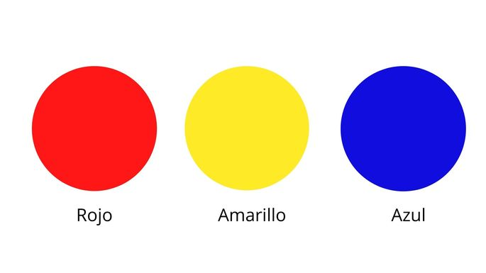

Dentro del círculo cromático, se colocan a 120º unos de otros: son el rojo, el amarillo y el azul. Se denominan primarios porque no pueden obtenerse mezclando otros colores
Los colores secundarios son los que se obtienen al mezclar dos colores primarios a partes iguales
